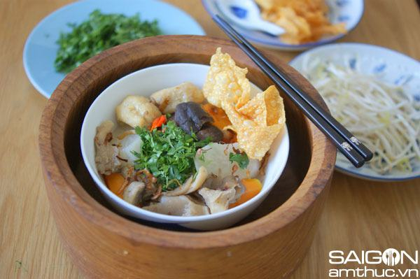

Cùng bắt tay làm thử thôi nào!
Nguyên Liệu :
– Xương heo (xương ống thì ngon vô cùng)
– thit xay
– 1/2 tôm (nếu ăn nhiều thì 1
– 1 cái gan
– 1 vỉ trứng cút 24 cái, nếu không có tươi thì dùng 1 lon trứng cút
– 1 bó cần tầu nhỏ
– 1 bó hành lá
– 2 trái chanh
– 1 bó hẹ
– 1 bọc giá (ít nhiều tuỳ số lượng ngưòi ăn)
– 2 muỗng canh củ cải mặn cắt nhỏ của chinese
– 2 củ cải trắng
– đường, nước mắm, bột ngọt
– dầu hào (hoặc xì dầu) + giấm + dầu mè
Cách làm :
– Bắc 1 nồi nước lèo to tuỳ ý thích, nấu cho sôi, và nếu thích cho vào 1 củ hành tây chẻ làm tư, đừng có chẻ đứt. Nấu cho sôi thì cho gia vị vào, thường thì cho vào khoảng 2 muỗng ăn canh đầy, nếu thấy nồi nước lèo chưa đủ mùi thơm và ngọt thì cho thêm vào. Xong thì nấu cho sôi, cho tan gia vị, để lửa nhỏ lại, và nêm cho vừa ăn, thêm nước mắm, đường, bột ngọt khi cần. Nêm vừa ăn thì thôi, vặn lửa nhỏ để nước lèo sắc và ngon.
– Tthịt xay cho lên chảo tí dầu cho nóng, xong cho vào 2 muỗng canh cải mặn. Kế đến cho thịt vào xào, rồi cho vào tí đường, tí bột ngọt, xào lửa cao cho săn, khi chín thì nêm cho vừa ăn, nếu không vừa ăn thì nêm thêm gia vị. Xong tắt lửa bỏ qua 1 bên.
– Xá xíu mua về thái miếng mỏng để vào đĩa.
– Gan luộc với 1 chút muối + vài lát hành tây (cho có vị thơm), vừa chín tới vớt ra, thái miếng mỏng.
– Tôm: chẻ lưng, lột vỏ, chà muối, rửa sạch để ráo nước (có thể trụng tôm khi nào ăn cũng được, còn không thì trụng hết 1 lúc bày ra dĩa, trụng trong nồi nước lèo). Trụng tôm để ráo rồi cho vào cùng đĩa với gan.
– Trứng cút tươi: thì luột chín ròi bóc bỏ vỏ. Còn trứng cút lon: thì nấu nồi nưóc sôi nhỏ lên, bỏ trứng cút vào trụng sơ rồi đổ ra gỗ cho ráo nước và bỏ 1 bên đĩa cùng với gan, tôm.
– Cần: rửa sạch cắt, lấy phần cọng, cắt nhỏ như cắt hành, cho vào 1 chén. Còn phần lá thì cắt dài dài giống cắt hẹ, để vào đĩa.
– Hành lá: rửa sạch, phần trắng thì cắt khúc dài dài, phần lá thì cắt nhỏ. Cho vào 1 chén. Rồi cắt vài miếng chanh để chung 1 bên.
– Hẹ: rửa sạch, rôi cắt khúc dài dài, để chung với cần.
– Giá: rửa sạch, ráo nước để chung với hẹ + cần. Cách nấu nước lèo: – Xương heo rửa cho sạch, cho nồi nước sôi vừa thôi, sôi lên thì cho toàn bộ xương vào trụng sơ, rồi đổ bỏ nước, rửa sạch, cho sạch máu tanh.
– Lấy 1 nồi nước to, nấu sôi. Cho vào xương heo + 2 cái củ cải trắng, bào vỏ rửa sạch. Nấu cho sôi lên rồi cho lửa nhỏ xuống để sôi từ từ cho đến khi nào xương mềm. Trong quá trình thì hớt bỏ bọt cho sạch và trông nước lèo. Khi xương mềm thì nêm gia vị vào cho vừa ăn thì thôi. Khi nào ăn thì múc cho vào tô hủ tiếu.
Trình bày
Hủ tiếu nước: Khi nào ăn thì mới trụng hủ tiếu. Cho 1 nồi nước vừa, đầy nưóc nấu sôi. Dùng cái giá lưới để trụng hủ tiếu như vậy ăn ngon hơn, hủ tiếu mềm mại nữa. Bỏ hủ tiếu vào giá, trụng vào nước đang sôi, rờ cọng hủ tiếu mềm thì sóc cho ráo nước rồi bỏ vào tô. – Kế đến cho vào tô 1 muỗng canh thịt bầm, vài lát xá xíu, 2 cái trứng cút, 4 con tôm, vài lát gan, cho lên trên 1 nhúm lá hẹ và 1 nhúm cần cắt nhỏ. – Cho nước lèo đang sôi vào tô, rắc tiêu, hành phi, bầy vài lá cần lên mặt tô cho đẹp và ngon mắt.
Hủ tiếu khô: Nước sốt hủ tiếu khô: 1 tsp dầu hào + 1 tsp dấm + vài giọt dầu mè, khuấy đều (cho 1-2 tô). – Chuẩn bị tô hủ tiếu với tất cả mọi món bày trên mặt tô như ở trên, thay vì cho nước lèo vào, chúng ta cho 1 muỗng sốt hủ tiếu khô vào. Khi ăn trộn lên cho nước sốt thấm đều với sợi hủ tiếu. Nước lèo thật nóng được để vào một chén riêng với một ít hành ngò và cần lá, vừa ăn hủ tiếu khô người ta vừa húp thêm nước dùng.
Món Hủ Tiếu Mỹ Tho, dọn ra ăn với giá + chanh, nếu ai thích hành cho vào tí hành lá. Dọn kèm bên 1 chén nước mắm với ớt xanh hay đỏ cắt nhỏ, và hủ tương ớt.